On 1 August 2026 Papa collapsed suddenly with weakness on his left side and confusion. Scans found small clots blocking circulation in the right side of his brain — a stroke. The clots were small and scattered rather than one large blockage, and within hours he was awake, talking and moving all four limbs. He was discharged stable on 5 August and is now home, with a Neurology OPD review due in 7 days.
Key reports
Start here — for second opinionsDay by day
1–6 Aug 2026ICU → ward → home
ICU 1–3 Aug, ward 3–5 Aug, home from 5 Aug 15:05Moving out of intensive care on Day 3 was the first clear signal the team considered him stable — no organ support needed, breathing, eating and passing urine on his own, full consciousness score. Two days later, on 5 August, he was discharged home in stable condition.
The team explained the option of a carotid stenting procedure (DSA ± stenting) for the ~60-70% right carotid narrowing, but the family chose to defer that decision rather than proceed immediately — it remains open for discussion at the OPD follow-up.
Carried over from the ward
- Fall risk stays high (Morse 70 in hospital). Same precautions apply at home — someone with him when moving about, clear walking paths, no rushing to the toilet alone.
- Mobilisation continues. Physiotherapy and speech therapy were advised on discharge — keep it going at home.
- Sugar charting continues. Diabetic-appropriate meals matter as much at home as in hospital.
- All key reports are in — CT angio, MRI, EEG and Holter. See the Key reports section.
Recovery curve
Glasgow Coma Scale, 15 = fully alertBody report card
skim the dotsWhy the clots formed
CT angiography 4 Aug + MRI 4 Aug + discharge summary 5 AugThis is a recurrent stroke, not a first event — the discharge summary records an old CVA in 2004, and the MRI found encephalomalacia with gliosis in the left anterior frontal region, read as an old parenchymal insult — almost certainly the imaging signature of that earlier stroke. The official discharge diagnosis lists the cause as "LVAD vs ICAD" (large-vessel atherosclerotic disease vs. intracranial atherosclerotic disease) — i.e. not fully settled between two related mechanisms, both driven by the same narrowed-artery disease.
The right carotid artery (neck) is narrowed ~60-70% by calcified plaque — a classic source for artery-to-artery embolism into the right MCA territory. CT angiography of the brain separately found intracranial disease on both sides: left internal carotid artery (distal cavernous/clinoid segment) ~70-80% stenosis, and left posterior cerebral artery (PCA, P1 segment) ~80% stenosis — thick mural calcification throughout, described as bilateral atherosclerotic change. These left-sided findings did not cause this particular right-sided event, but they are same-disease, and matter for future risk.
The MRI distinguishes old vs. new damage: a chronic lacunar infarct in the right anterior limb of the internal capsule (pre-existing small-vessel disease, not new), plus a new acute infarct in the right posterior parietal region (restricted on DW images — this is the current event), on a background of diffuse cerebral atrophy and patchy microangiopathic ischemic change throughout.
Open question for the next opinion
DSA ± right carotid stenting was discussed at discharge but deferred by the family — this is unresolved. Worth asking any second opinion specifically: (1) does the ~60-70% right carotid stenosis meet the threshold for stenting/endarterectomy given this is a recurrent event, and (2) how should the separate left ICA (~70-80%) and left PCA (~80%) intracranial stenoses be managed going forward.
Medicines and what each does
discharge list, 05/08 — supersedes in-hospital chart| Medicine | What it is | Why he is on it |
|---|---|---|
| Ecosprin 75 + Clopitab 75 | Two blood thinners — aspirin and clopidogrel | Stop new clots forming. This is the core stroke protection. Never skip or stop without the doctor. Once daily, 10pm. |
| Atorva 80 | High-dose statin (raised from 40 in hospital) | Lowers LDL cholesterol and stabilises artery plaque. Once daily, 10pm. |
| Vilpower M 500 | Diabetes tablet | Brings blood sugar under control — the priority after discharge. 12-hourly, 9am–9pm. |
| Neurocetam Plus | Brain-recovery support | Supports healing of brain tissue after a stroke. Twice daily. |
| Inj. Tyvalzi 4ml IV | Brain-recovery support (injectable) | Continuing 8-hourly (9am-1pm-9pm) through 07/08, then reviewed at follow-up. |
| Brivgard 50 | Anti-seizure medicine | Protective cover after a stroke. 12-hourly (10am–10pm) — to be tapered at the follow-up visit, not stopped on its own. |
| Topxime CV 625 | Antibiotic | Twice daily for 3 days only, then stop — short course, do not continue past that. |
| Pan 40 | Stomach protection | Protects the stomach from the blood thinners. Once daily, 7pm. |
| Mednovit CD3 | Vitamins | General recovery support. Once daily. |
| Syp. Looz 30ml | Laxative | Bedtime (10pm), as needed for regular bowel movement. |
This is the discharge medication list (05/08) — always follow the physical discharge sheet for exact doses/timings, and never change or stop any of these without the doctor's advice.
What family can do
Now, at home
- Neurology OPD review in 7 days (by ~12 Aug) — call ahead for a prior appointment, and take the discharge summary + all films/reports with you.
- Do not change or stop any medicine without the doctor — especially the two blood thinners and Brivgard, which needs a supervised taper, not a sudden stop.
- Physiotherapy and speech therapy as advised — start/continue at home; ask the OPD team to confirm a schedule.
- Keep sugar charting going and meals diabetic-appropriate; Atorva dose has gone up to 80mg so watch for any new muscle pain and mention it at follow-up.
- The right carotid stenting/DSA decision was deliberately deferred by the family — this is still open and worth raising proactively at the OPD visit, not waiting for it to come up.
Seek urgent care if
- New weakness or drooping of face, arm or leg — either side
- Slurred speech or trouble understanding others
- Sudden severe headache, vomiting, or a fit
- Becomes very drowsy or hard to wake
- High-grade fever
- Bleeding, vomiting, loose motion, severe pain, or swelling/redness anywhere
- Black stools or unusual bleeding — he is on two blood thinners
70M, known T2DM, presented 01/08/2026 11:38 with syncope, generalised weakness and left hemiparesis with disorientation. Imaging confirmed acute right MCA territory infarct — multiple small scattered DWI lesions on a background of chronic small-vessel disease. Stepped down from ICU to ward room 1002A on 03/08 at 21:00, GCS 15/15, power 5/5, room air. CTA (04/08) identifies significant carotid and intracranial atherosclerosis as the likely stroke aetiology — see Investigations.
- Presenting complaint
- Syncope, generalised weakness, left hemiparesis, disorientation
- Working diagnosis
- Acute right MCA infarct — multiple small emboli; embolic pattern on chronic microangiopathy
- Neurological course
- GCS on arrival E4V1M6 (11) at ~13:30 → E4V5M6 (15) same evening; 15/15 sustained every shift D1 night → D3. Power 5/5 all limbs, pupils equal and reactive, room air throughout. Residual mild disorientation, improving.
- Co-morbidities
- Type 2 diabetes mellitus (HbA1c 8.2%). Grade I fatty liver, BPH ~50cc. Allergies: not known.
- Disposition
- Shifted ICU → ward room 1002A (semi-private) on 03/08 at 21:00. Dermatology referral placed for gluteal/neck fungal infection.
Investigations
abnormals in red · pending in amberNeuro imaging
- NCCT head 01/08
- No haemorrhage or mass effect
- MRI brain 01/08
- Acute Rt MCA infarcts on DWI; chronic WM microangiopathic change. Written report awaited
- CTA neck 02/08, rpt 04/08
- Rt carotid bulb/proximal ICA: thick calcified plaque, moderate stenosis ~60-70%. Lt carotid bulb/ICA: calcified plaque, mild stenosis <40-50%. Rest of cervical vessels + bilateral vertebrals: normal.
- CTA brain 02/08, rpt 04/08
- Bilateral intracranial ICA mural calcification (atherosclerotic). Lt ICA (distal cavernous/clinoid): moderate-severe stenosis ~70-80%. Lt PCA (P1): moderate-severe stenosis ~80%. Bilateral ACA/MCA, basilar, Rt PCA: normal, no dilation/cut-off/AVM.
- EEG 03/08
- No epileptiform discharge. Background 7-8 Hz theta — mild diffuse slowing, consistent with post-stroke recovery phase. Impression: mild electrophysiological dysfunction.
Cardiac
- ECG 01/08
- Sinus rhythm, HR 60, QS in V1, QTc 394
- 2D Echo 01/08
- EF 55%, mild concentric LVH, Gr-I diastolic dysfunction, trace MR/TR, LA 3.4 cm, normal PAH, no intracardiac clot or vegetation, no effusion
- 24-h Holter
- Attached 03/08 12:11 — result awaited (occult PAF screen)
Laboratory · trend 01 → 03/08
- HbA1c
- 8.2%
- LDL / HDL / TG / TC
- 108 / 36 / 136 / 159
- TLC
- 9,580 → 14,400 (N 86.5%) → 8,580 · self-resolved
- Hb / platelets
- 15.7 → 14.5 · 2.59 → 1.95 L (in range, monitor on DAPT)
- Creatinine / Na / K
- 0.94–1.03 / 139–141 / 4.19–4.75 — normal
- LFT / TSH
- Normal / 2.15
- B12 / Vit D / CRP
- 868 / 67.2 / <0.10
- ABG 01/08
- pH 7.41, pCO₂ 40, lactate 1.5, glucose 146
Other
- Urine R/M 02/08
- Nitrite positive, bacteria present, budding yeast; pus cells 1–2/HPF, LE nil — low-grade, consider culture
- Skin
- Fungal infection gluteal region and neck — derma referral 03/08
- CXR PA 01/08
- Clear lung fields, normal cardiac silhouette
- USG whole abdomen
- Grade I fatty liver; prostatomegaly ~49–50cc with median lobe hypertrophy; kidneys, GB, pancreas, spleen normal; no free fluid
Treatment given
from drug chart, commenced 01/08| Drug | Dose · route · frequency | Class / purpose |
|---|---|---|
| Tab Ecosprin | 75 mg PO OD (300 mg load D1) | Antiplatelet — DAPT |
| Tab Clopitab | 75 mg PO HS | Antiplatelet — DAPT |
| Tab Atorva | 40 mg PO HS | High-intensity statin |
| Inj Brivgard (brivaracetam) | 50 mg IV q12h | ASM cover — EEG-guided review |
| Inj Cognistar (citicoline) | 60 mg IV q8h | Neuroprotective |
| Inj Tyvalzi | 4 ml IV · D0, D3, D6 | Neuro-recovery adjunct |
| Cap Galvus-Met | 50/500 PO | T2DM · RBS charting TDS + sliding scale |
| Inj Pantocid | 40 mg IV OD | PPI cover on DAPT |
| Inj Emeset | 4 mg IV q8h PRN | Antiemetic |
| Remylin PFS · Mednovit CD3 · Ubnol · Vil Power-M · L-Qunol | as charted | B12 / multivitamin / supportive |
| IVF normal saline | 75 ml/hr × 3 days | Maintenance — stopped per plan |
Clinical course
D1 – D3- Vitals
- HR 60–95 · NIBP ~100–145/60–85 · SpO₂ 93–99% on room air · afebrile 98.1–98.6 °F
- Neuro observations
- GCS 15/15 sustained · pupils N/N reactive · peripheral pulses +2 all limbs · power 5/5 bilaterally
- Intake / output
- D2 intake 2,750–3,190 ml · urine ~1,600 ml · Foley removed 02/08, voiding spontaneously · bowels not opened by D3
- Nutrition & mobility
- Soft diet, oral intake ~900–1,000 ml/day · bed rest, mobilisation planned with ward transfer
- Level of care
- ICU D1–D3 → ward room 1002A (semi-private) from 03/08 21:00; no organ support at any point, room air throughout
- Risk scoring
- Morse fall score 70 (high) — precautions in place · DVT risk 3–4 · Braden 14–15
Pending items & working aetiology
To complete
- CTA-confirmed carotid/intracranial stenosis — vascular surgery / neuro-interventional opinion needed: does Rt carotid ~60-70% and Lt intracranial ~70-80%/~80% meet threshold for revascularisation (stenting/endarterectomy) vs. optimal medical therapy alone?
Formal MRI report— received 04/08. Confirms diffuse atrophy, microangiopathic ischemic changes, chronic lacunar infarct, old encephalomalacia, and acute infarct (right posterior parietal). See Key reports.Holter analysis— received, no critical finding. 24-h monitor: avg HR 66bpm, 0 pauses >2s, 0% AFib/AFlut — no occult PAF found. Full report in Records.- EEG clean (no epileptiform activity) — review need for continuing brivaracetam; candidate for taper/stop.
- Post-transfer: physiotherapy/mobilisation referral, fall precautions (Morse 70), swallow safety check before unsupervised feeding.
- Urine culture ± targeted therapy; topical antifungal per dermatology.
- Diabetology input — OHA titration, target HbA1c <7; LDL goal <70, recheck lipids at 6–8 weeks.
- Discharge: DAPT duration per protocol (typically 21 days dual → single agent), physio/rehab plan, urology OPD for BPH.
Working aetiology
Discharge diagnosis: recurrent ischemic stroke, right MCA infarct, etiology LVAD vs ICAD (large-vessel atherosclerotic disease vs. intracranial atherosclerotic disease) — the hospital's own summary leaves this undetermined between the two, not a single confirmed mechanism. Right carotid bulb/proximal ICA plaque causing ~60-70% stenosis is the leading candidate (artery-to-artery embolism); clean echo (no intracardiac source), sinus rhythm on admission ECG, and 0% AFib/AFlut on 24-h Holter make a cardioembolic source unlikely.
Recurrent event: patient has a documented old CVA (2004). MRI shows left anterior frontal encephalomalacia with gliosis (old parenchymal insult, consistent with that prior event) plus a separate chronic lacunar infarct (right internal capsule) — distinct from this admission's acute infarct in the right posterior parietal region.
Additional, separate burden noted: Lt intracranial ICA stenosis ~70-80% and Lt PCA (P1) stenosis ~80% — asymptomatic at present but relevant to overall stroke-recurrence risk and future vascular planning. DSA ± right carotid stenting was offered and deferred by the family at discharge — open decision.
Modifiable substrate remains prominent: uncontrolled T2DM at 8.2%, LDL 108 with HDL 36, grade I hepatic steatosis.
All 85 source pages — films, echo, ECG, labs, drug charts and ICU flowsheets — are in the Records tab.
Every page below is a photograph of an original hospital record from 1–5 August 2026. Click to enlarge, then use ← → to move through the set, click the image to zoom, and Esc to close.
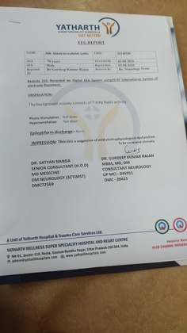
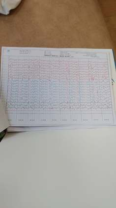
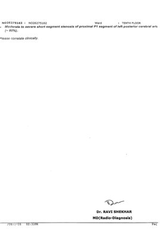
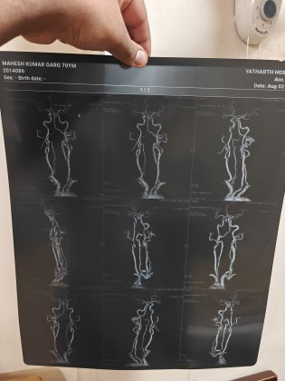
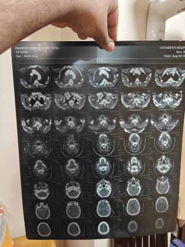
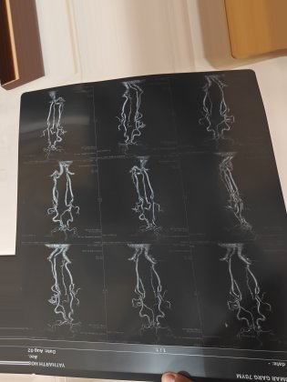
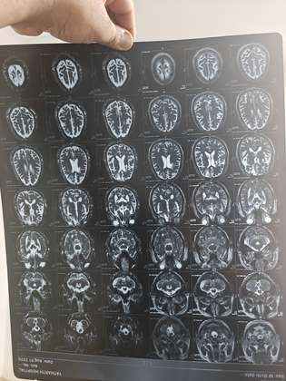
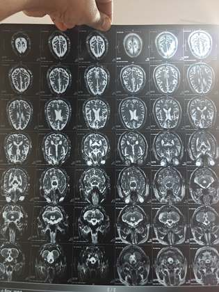
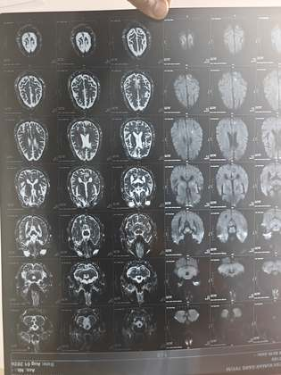
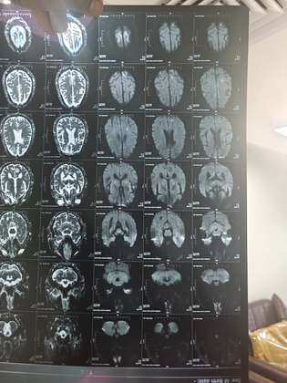
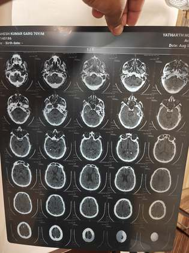
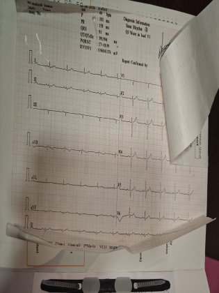
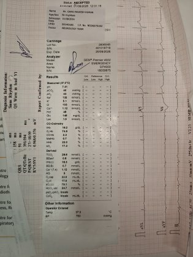
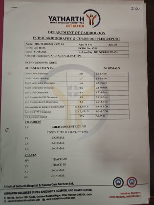
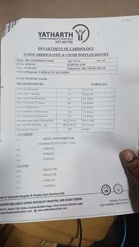
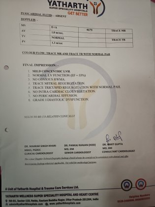
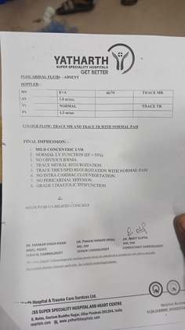
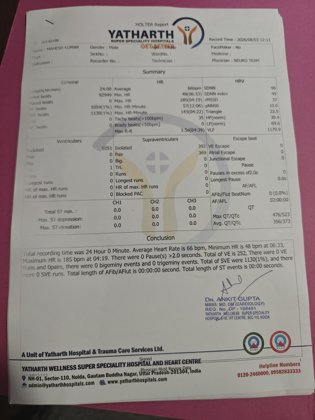
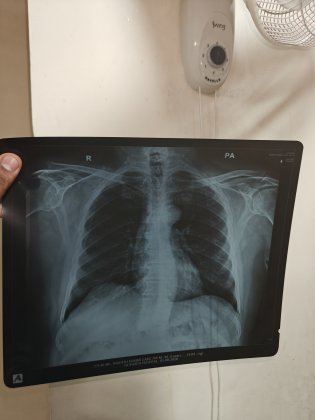
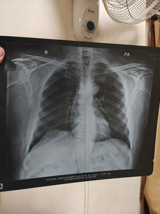
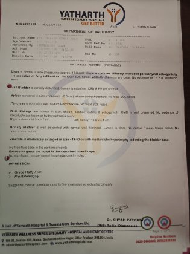
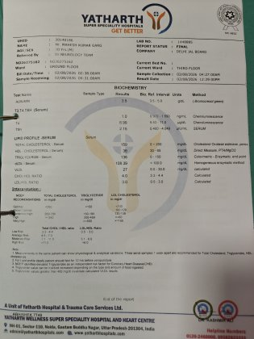
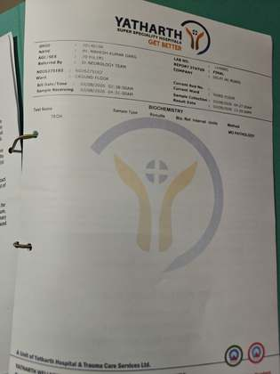
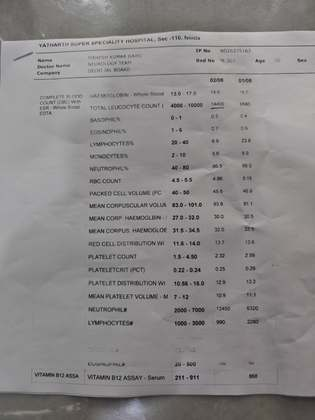
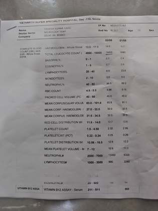
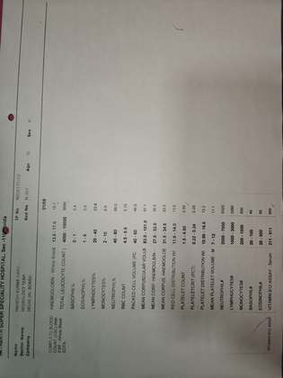
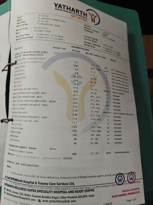
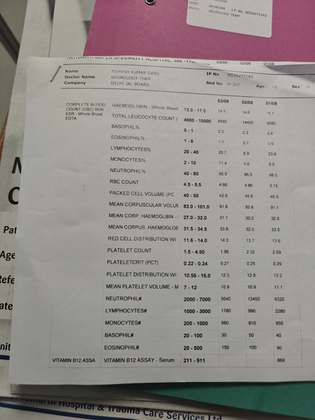
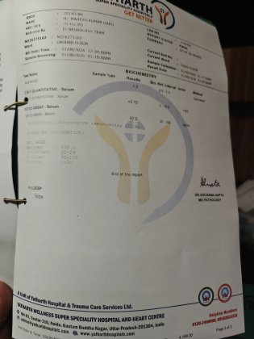
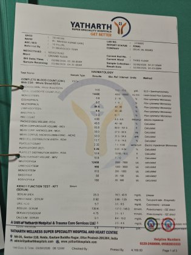
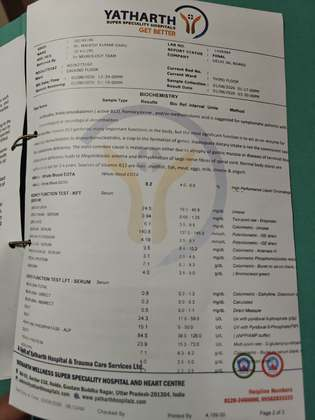
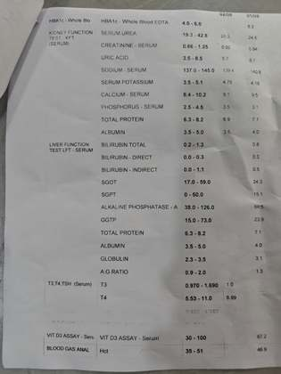
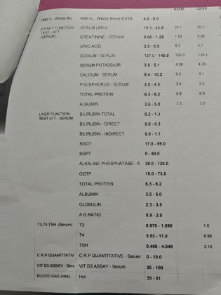
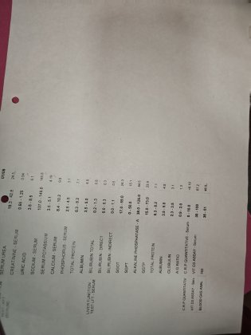
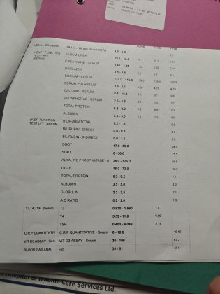
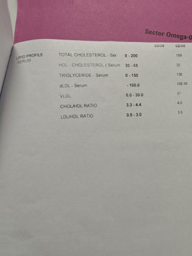
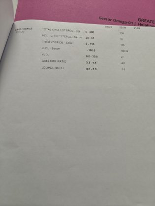
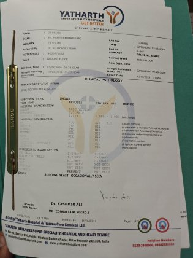
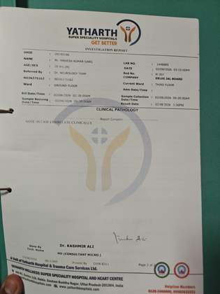
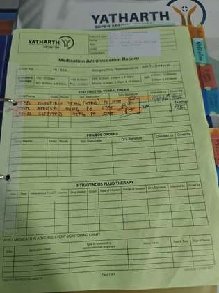
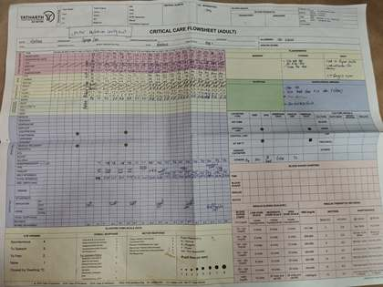
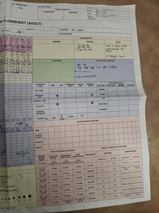
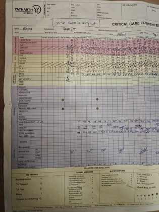
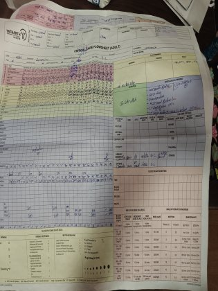
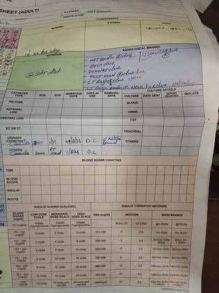
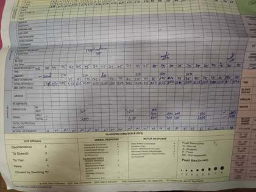